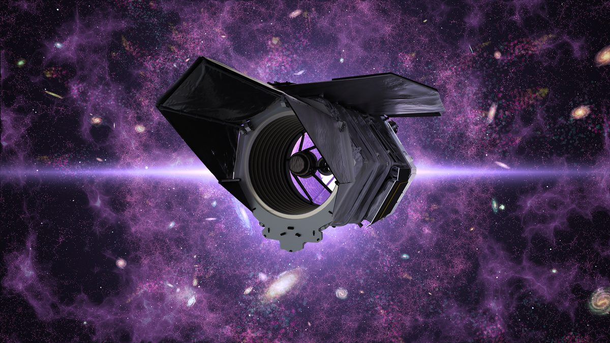

宇宙学
星系巡天让我们能够通过宇宙的大尺度结构检验宇宙学模型。弱引力透镜是罗曼空间望远镜高纬度广域巡天（其成像部分为高纬度成像巡天）的主要科学目标之一：大尺度结构会在遥远星系的形状上留下微小的畸变，弱引力透镜正是通过这些畸变来测量它。我在宇宙学方面的工作，既包括预测这类巡天能告诉我们什么，也包括连接理论与观测的模拟和数值方法。

星系巡天让我们能够通过宇宙的大尺度结构检验宇宙学模型。弱引力透镜是罗曼空间望远镜高纬度广域巡天（其成像部分为高纬度成像巡天）的主要科学目标之一：大尺度结构会在遥远星系的形状上留下微小的畸变，弱引力透镜正是通过这些畸变来测量它。我在宇宙学方面的工作，既包括预测这类巡天能告诉我们什么，也包括连接理论与观测的模拟和数值方法。
